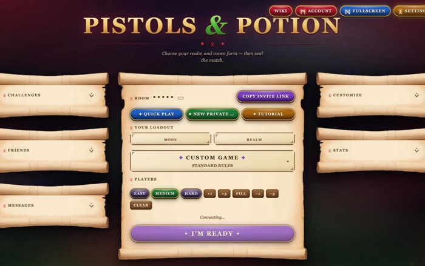
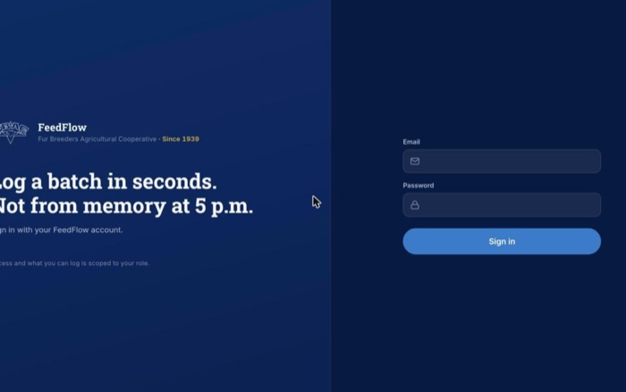
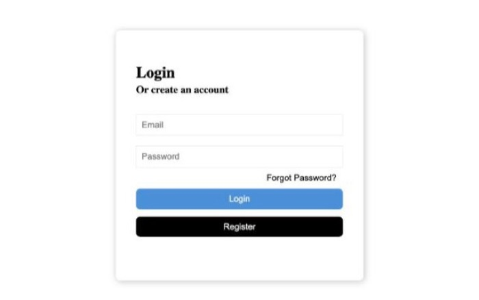

Projects

Pistols & Potions
A multiplayer 3D arena shooter that runs in the browser, with up to 8 players per room in free-for-all or red vs blue teams. Everyone gets a pistol and a blade, ammo is limited, and loot on the map keeps matches moving. Built with a Node server and plain ES modules, with bots for solo testing.
Play nowFeedFlow
An inventory app for a farm co-op, modeled on their Excel system. Staff log batches, receipts and sales, and managers see live beginning-to-ending balances. It has role-based access with Supabase, works offline as a PWA, and deploys through GitHub Actions and Vercel.

Live Scoreboard
Real-time sports scores pushed to every viewer over WebSockets. Clients subscribe to a sport, and the server routes and reshapes each update before broadcasting it, using publish-subscribe, content-based routing and message translator patterns.
View codeTodo List
A task app where each person signs up, logs in and manages their own to-dos. Accounts and password resets run on Firebase Authentication, with the interface in plain HTML, CSS and JavaScript.
